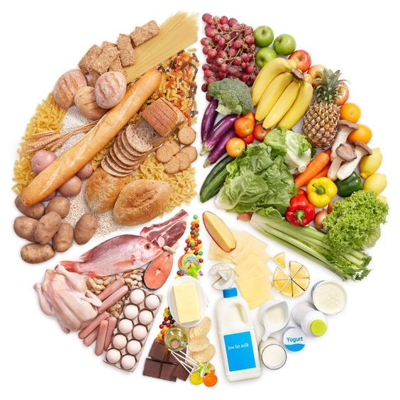

PORTAFOLÍO
Nutrición Personalizada
Nuestro servicio de asesoría nutricional se enfoca en crear planes de alimentación que complementen los objetivos de fitness de nuestros clientes. Realizamos un análisis exhaustivo de la dieta actual del cliente y proporcionamos un plan nutricional adaptado a sus preferencias, restricciones dietéticas y metas. El servicio incluye un plan de comidas semanal detallado, con recetas y listas de compras, junto con un seguimiento continuo para hacer ajustes según sea necesario.
Destacado del proyecto
Consultas Personalizadas:Reuniones con un nutricionista certificado para diseñar un plan alimenticio a medida.
Plan Nutricional Completo:Creación de un menú semanal balanceado, alineado con los objetivos de entrenamiento.
Soporte Continuo:Revisión periódica del plan para ajustarlo según el progreso del cliente y cualquier cambio en sus necesidades.
Resultados alcanzados
Transformación Corporal: Clientes que han logrado una mejora significativa en su composición corporal a través de una dieta optimizada.
Mejora en la Salud General:Reducción de problemas de salud relacionados con la dieta, como la hipertensión y el colesterol alto.
Satisfacción del Cliente: Altos índices de adherencia al plan y satisfacción general con los resultados obtenidos.
Entrenamiento personalizado

Nuestros planes de entrenamiento personalizados están diseñados para adaptarse a las necesidades individuales de cada cliente. Comenzamos con una evaluación integral del estado físico y las metas personales, como pérdida de peso, tonificación muscular o mejora del rendimiento deportivo. Con base en esta información, desarrollamos un plan de ejercicios que combina rutinas de fuerza, cardio, flexibilidad y movilidad, optimizado para la disponibilidad de tiempo y recursos del cliente.
Destacado del proyecto
Evaluación Inicial: Análisis de la condición física actual y establecimiento de metas claras.
Plan de Entrenamiento Adaptado:Rutinas específicas ajustadas al nivel de cada cliente y a su disponibilidad de equipo.
Seguimiento Regular:Monitoreo continuo y ajuste del plan según el progreso, asegurando la optimización de los resultados.
Resultados alcanzados
-Clientes Satisfechos: Incremento en la retención de clientes debido a planes efectivos y adaptados a sus necesidades.
-Progreso Medible: notables en la fuerza, resistencia y composición corporal de los clientes.
-Retroalimentación Positiva: Testimonios de clientes que han alcanzado y superado sus objetivos de fitness.
ENTRENAMIENTO ONLINE
Destacado del proyecto
Ofrecemos un servicio flexible de entrenamiento en línea que permite a los clientes entrenar desde cualquier lugar. Las sesiones en vivo proporcionan interacción en tiempo real con un entrenador personal, garantizando una experiencia de entrenamiento guiada y personalizada. Las sesiones bajo demanda ofrecen la flexibilidad de seguir rutinas grabadas, diseñadas para ser efectivas y seguras, con demostraciones claras y explicaciones detalladas.
Entrenamiento en Vivo:Sesiones interactivas que permiten recibir correcciones y motivación en tiempo real.
Entrenamiento Bajo Demanda:Acceso a una biblioteca de entrenamientos grabados, disponibles en cualquier momento.
Accesibilidad y Flexibilidad:Ideal para clientes con horarios ocupados o que prefieren entrenar en la comodidad de su hogar.
Resultados alcanzados
Incremento en la Participación:Mayor participación y adherencia gracias a la flexibilidad y conveniencia del servicio.
Resultados Consistentes:Los clientes logran mantener sus rutinas de entrenamiento, obteniendo resultados sostenidos.
Expansión de la Clientela:Atracción de nuevos clientes que buscan opciones de entrenamiento accesibles y adaptables a sus estilos de vida.